SmartTools アドオン解説書
Smart Modifier（スマートモディファイア） 解説書
版 1.0.0 ／ 2026年11月17日 ／ Blender 5.1.2 用
モディファイアとは、元の形を壊さずに、あとから形を変える仕組みです（角を丸める、なめらかにする、など）。Blender では普通、プロパティエディターのスパナのタブで扱います。Smart Modifier を使うと、同じ作業を 3D ビューのサイドバー（N パネル）だけで行えます。スタック（モディファイアを重ねた一覧）の中の「どの段階を編集するか」を、行のクリックで切り替えられます。複数のオブジェクトに同じモディファイアをつないで（インスタンス）、まとめて調整することもできます。シーン全体のモディファイアの表示をまとめて切り替える「モディファイア管理」も入っています。インストールの方法・日本語化・N パネルの開き方・「？」ヘルプの使い方は、全体仕様書の共通の章を見てください。
1. このアドオンでできること
3Dビューのサイドバーで、モディファイアの追加・並べ替え・表示切り替え・途中段階の編集をまとめて行う道具です。
- サイドバーの「モディファイアーを追加」から、Blender 標準のモディファイアと、同梱のユーザーツールを追加できます。
- スタックの行をクリックして、編集する段階（「ベースオブジェクト」か、各モディファイア）を切り替えられます。
- 各行のアイコンで、ケージ・編集モード・リアルタイム表示・レンダーの表示を、プロパティエディターを開かずに切り替えられます。
- 行のメニューから、移動・適用・「ここまでを適用」・削除・コピー・カット・貼り付け・名前の変更ができます。
- 複数のオブジェクトを選んで追加すると、同じ設定でつながったモディファイア（インスタンス）として全部に追加されます。
- 「モディファイア自動無効」で、編集中の段階より後ろのモディファイアを一時的に止めて、途中の形を確かめられます。
- 「最終結果を表示」で、途中の段階を編集しながら最後の形も見られます。
- 「モディファイア管理」で、モディファイアを一覧にして、表示のオン・オフや削除をまとめて行えます。
- 「常時機能切り替え」で、裏で動き続ける機能を必要な物だけ動かせます。
- ショートカットに登録するための ID を、「設定」の「IDをコピー」でコピーできます。
- モデリング中に、元の形とモディファイアの段階を行き来して直す。
- 後ろのモディファイアを一時的に止めて、途中の形を見ながら編集する。
- 同じ部品を何個も作り、まとめて設定を変える。
- シーン全体で同じモディファイアの表示を一度に切り替える。
ひと目で分かる例
このアドオンを使うと、画面は次のように変わります。くわしい操作は 4 章の各機能の「実例」で説明します。
実例角ばった立方体に丸みとなめらかさを重ねる（立方体で試した様子）
「モディファイアーを追加」で、ベベル（角を丸める）とサブディビジョンサーフェス（なめらかにする）を順に足します。
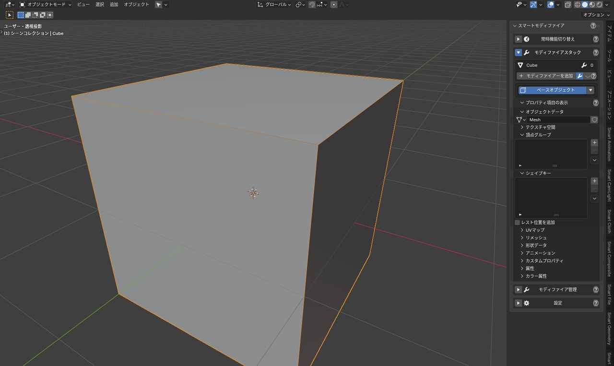
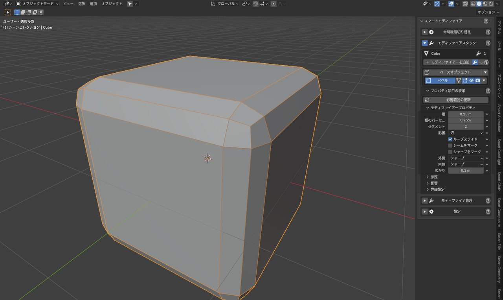
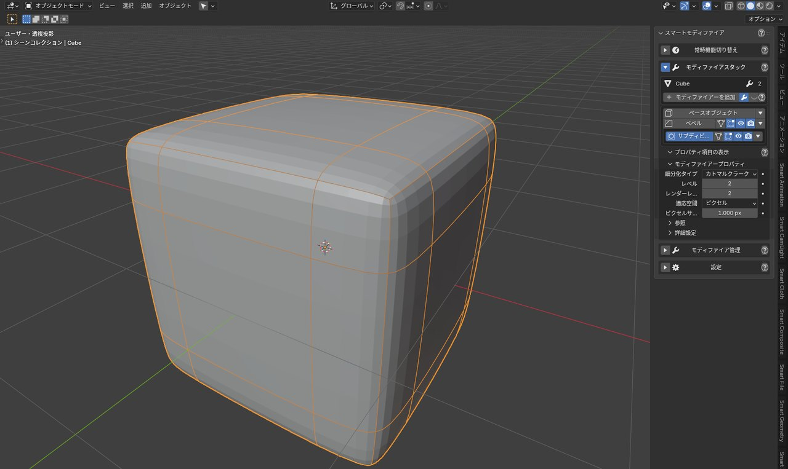
- 立方体をクリックして選びます。
- 「モディファイアスタック」の「モディファイアーを追加」を押し、「生成」から「ベベル」を選びます。「プロパティ項目の表示」で「幅」を 0.25 に、「セグメント」を 2 にします。
- もう一度「モディファイアーを追加」を押し、「生成」から「サブディビジョンサーフェス」を選びます。「プロパティ項目の表示」で「レベル」を 2 にします。
見どころ：1 つ足すごとに形が変わります。ベベルで角が面取りされ、サブディビジョンサーフェスを重ねると全体が丸くなります。どちらもモディファイアなので、元の立方体のデータはそのまま残ります。
実例元の形を直しながら、最後の形も同時に見る（最終結果を表示）（スザンヌで試した様子）
「ベースオブジェクト」の編集モードで目のアイコン（「最終結果を表示」）をオンにすると、元の形を編集しながら、モディファイアを全部かけた最後の形も見えます。元の形の点は最後の形の内側に隠れるので、透過表示にして両方を見ます。
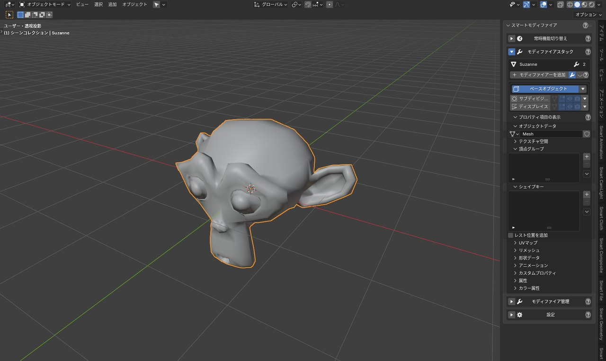
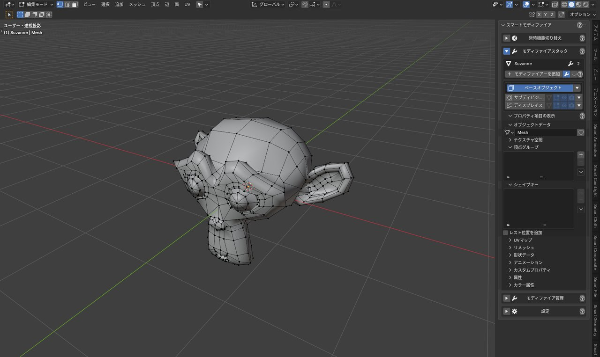
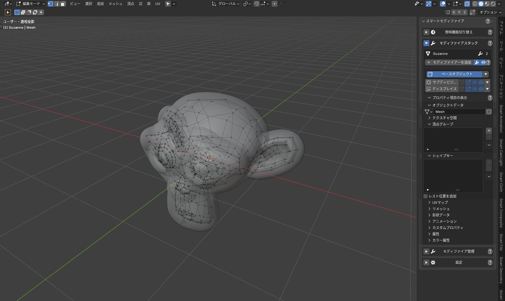
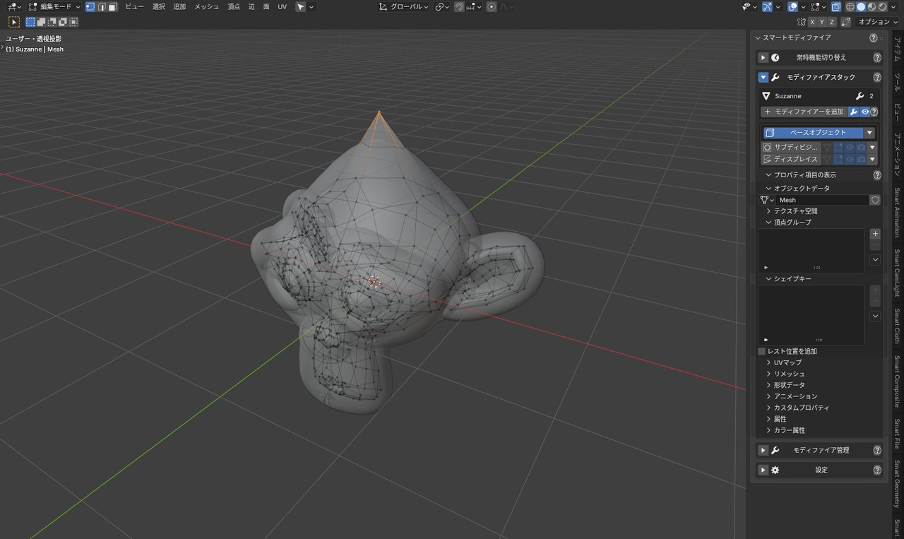
- スザンヌにサブディビジョンサーフェスとディスプレイス（強さ 0.3）を足しておきます。
- スタックの「ベースオブジェクト」の行をクリックし、もう一度クリックして編集モードに入ります。
- 「モディファイアーを追加」の右の目のアイコン（「最終結果を表示」）を押します。
- Alt+Z キーを押して透過表示にします。
- 透けて見える点のうち、頭のてっぺんの点を選び、上へ動かします。
見どころ：目のアイコンを押しても編集モードのままです。透過表示では、元の形の点と、ふくらんだ最後の形が同時に見えます。元の形の点を動かすと、最後の形も一緒に動きます。
2. 準備
アドオンの入れ方・画面を日本語にする方法・N パネルと「？」ヘルプの共通の使い方は、「SmartTools 全体仕様書」にまとめています。先にそちらの 2〜5 章を読んでください。
| 入れる ZIP | SmartModifier_1.0.0_2DBF95E1FD83_INSTALLABLE.zip |
|---|---|
| Blender の画面での名前 | Smart Modifier |
| 動く Blender | 5.1.2 |
3. 画面の場所
3Dビューのサイドバー（N パネル）の「Smart Modifier」タブにある「スマートモディファイア」パネルです。中は「常時機能切り替え」「モディファイアスタック」「モディファイア管理」「設定」の 4 つの折りたたみの見出しに分かれています。
| 出る画面 | 3D ビューポート |
|---|---|
| タブ | Smart Modifier |
| モード | オブジェクトモード |
- 3D ビューにマウスを置き、N キーでサイドバーを開きます（開き方の詳細は全体仕様書を見てください）。
- サイドバーの右端のタブから「Smart Modifier」を選びます。
- メッシュなどのオブジェクトをクリックして選びます。何も選んでいないと「オブジェクトを選択してください。」と出ます。
- 見出しの左の三角か、見出しの文字をクリックすると、その見出しが開きます。「モディファイアスタック」は最初から開いています。
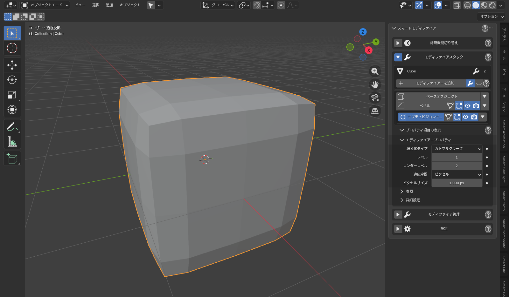
4. 機能の説明
画面の上から順に、見出しごとに説明します。見出しの右の「？」を押すと、同じ内容の説明が画面にも出ます。青い枠の「実例」は、スザンヌや MIK のモデルで実際に操作し、3D ビューでの変化を前と後で並べたものです。
4-1. 常時機能切り替え
Blender が待っている間も裏で動き続ける機能（自動の同期や一覧の自動更新など）を、入れたり切ったりする場所です。切った機能は止まったままになるので、待機中が軽くなります。
場所「スマートモディファイア」パネルのいちばん上の見出しです。最初は閉じています。
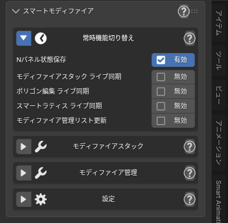
| 表示 | 働き |
|---|---|
| Nパネル状態保存 | サイドバーの設定を、Blender の設定フォルダの中のファイルへ保存するかどうかです。オンでは変更のたびにすぐ保存します。オフにすると、オンに戻すまで書き込みません。最初はオンです。 |
| モディファイアスタック ライブ同期 | スタックの表示、「最終結果を表示」の状態、設定欄の値を、編集に合わせて自動で最新にする仕組みです。最初はオフです。軽くしたい時はオフのままにします。つながったモディファイア（インスタンス）の値の連動は、オフのままでも働きます。 |
| ポリゴン編集 ライブ同期 | 同梱の編集ポリゴン（下の「編集ポリゴンメンテナンス」を参照）の、選択の追跡とスタックとの同期を動かします。最初はオフです。オフの間は止まったままで、裏で勝手にオンになることはありません。 |
| スマートラティス ライブ同期 | 同梱の Smart Lattice（ラティス＝箱型の変形用の枠）の画面表示と同期を動かします。最初はオフです。ラティスの変形を編集する時だけオンにします。 |
| モディファイア管理リスト更新 | 「モディファイア管理」の一覧を、自動で作り直し続けます。最初はオフです。重いシーンではオフのままにして、必要な時だけ手で更新します。 |
| 有効 / 無効（各行の右のボタン） | 押すたびに「有効」と「無効」が切り替わります。有効の時はチェックの印が付いて青く表示されるので、今の状態がひと目で分かります。最初は「Nパネル状態保存」だけが「有効」です。 |
4-2. モディファイアスタック
モディファイアの追加、編集する段階の切り替え、表示の切り替え、並べ替えなどを行う、メインの作業場所です。「ベースオブジェクト」（モディファイアをかける前の元の形）と、重ねたモディファイアが順に並びます。
場所「スマートモディファイア」パネルの 2 番目の見出しです。最初から開いています。
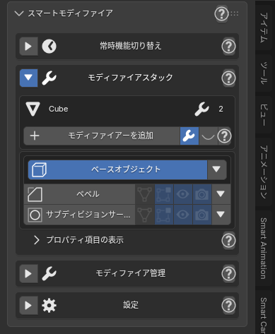
| 表示 | 働き |
|---|---|
| オブジェクト名とモディファイアの数 | いちばん上の行に、選んでいるオブジェクトの名前と、モディファイアの数が出ます。複数選んでいる時は、選んだ数も出ます。 |
| モディファイアーを追加 | 追加のメニューを開きます。上に同梱のユーザーツールのグループ（例：「UV / マッピング」「変形 / FFD / 形状」）、下に Blender 標準の分類（「編集」「生成」「変形」「ノーマル」「物理演算」など）が並びます。1 つ選ぶとメニューは閉じ、選んだモディファイアがスタックに増えて、その形が画面に出ます。新しいモディファイアは、今選んでいる行のすぐ下に入ります（「ベースオブジェクト」を選んでいる時は、いちばん最初に入ります）。 |
| モディファイア自動無効（「モディファイアーを追加」の右のアイコン） | オンの時、選んでいる段階より後ろのモディファイアの、ケージ・編集モード・リアルタイム・レンダーを一時的にオフにします。選んだ段階までの形だけを見て編集できます。「ベースオブジェクト」を選んでいる時は、全部のモディファイアが止まります。止まるのは行を切り替えた時です。スパナのタブなど Smart Modifier を通さずに足したモディファイアは、次に行を切り替えるまで動いたままです。最初はオンです。このアイコンと右の目のアイコンは、メッシュのオブジェクトを選んでいる時だけ出ます。戻す時の動きは「設定」の「自動無効からの復元」で決めます。 |
| 最終結果を表示（目のアイコン） | オンにすると、途中の段階を編集しながら、全部のモディファイアをかけた最後の形も表示します。編集モードのまま押せて、点を動かすと最後の形も一緒に動きます。最初はオフで、オフの間は閉じた目の形のアイコンになります。「モディファイア自動無効」がオンの時に働きます。 |
| ベースオブジェクト | クリックすると、モディファイアをかける前の元の形を編集する段階に切り替わります。右の▼のメニューには「貼り付け」「ペースト（インスタンス）」があり、インスタンスでつながっている時は「インスタンス解除」も出ます。 |
| モディファイアの行（名前） | クリックすると、その段階が編集の対象になります。今のモード（オブジェクトモードか編集モード）はそのままです。選んでいる行をもう一度クリックすると、編集モードとオブジェクトモードが切り替わります。インスタンスの行には、つながりを表す鎖のアイコンが付きます。 |
| 行の 4 つのアイコン | 左から、ケージ（編集中の点を、変形した後の形の上に出す）、編集モードで表示、リアルタイム（ビューポートで表示）、レンダーで使う、のオン・オフです。Blender 標準のモディファイアの見出しのボタンと同じ意味です。動いている行のアイコンは今の実際の状態を示し、押すとその状態が切り替わります。目のアイコンが開いていれば、そのモディファイアは形にかかっています。「モディファイア自動無効」で止まっている行は全体が薄く出ます。薄い行のアイコンは、その行が動き出した時の状態を示します。押すと動き出した時の状態が切り替わり、形はその時まで変わりません。「最終結果を表示」の最後の形は別に出す表示なので、その間も止まっている行は薄いままです。 |
| 行のメニュー（▼） | 「上に移動」「下に移動」「適用」「ここまでを適用」「削除」「コピー」「カット」「貼り付け」「ペースト（インスタンス）」「名前を変更」があります。インスタンスの行では「インスタンス解除」「インスタンスを選択」も出ます。 |
| 適用 / ここまでを適用 | 「適用」は、そのモディファイアの結果を形に焼き付けて、モディファイアを消します。「ここまでを適用」は、ベースオブジェクトからその行までをまとめて焼き付け、後ろのモディファイアは残します。どちらも元に戻すには Undo（Ctrl+Z）を使います。 |
| 貼り付け / ペースト（インスタンス） | 「貼り付け」は、コピーしたモディファイアを、別々に編集できる独立したモディファイアとして追加します。「ペースト（インスタンス）」は、つながった状態で貼り付けます。片方を変えると、もう片方も同じように変わります。 |
| インスタンスを選択 / インスタンス解除 | 「インスタンスを選択」は、同じつながりを持つオブジェクトを全部選びます（今の選択に足します）。「インスタンス解除」は、今の設定のまま、その行だけをつながりから切り離します。 |
実例角ばった立方体に丸みとなめらかさを重ねる（立方体で試した様子）
「モディファイアーを追加」で、ベベル（角を丸める）とサブディビジョンサーフェス（なめらかにする）を順に足します。
- 立方体をクリックして選びます。
- 「モディファイアスタック」の「モディファイアーを追加」を押し、「生成」から「ベベル」を選びます。「プロパティ項目の表示」で「幅」を 0.25 に、「セグメント」を 2 にします。
- もう一度「モディファイアーを追加」を押し、「生成」から「サブディビジョンサーフェス」を選びます。「プロパティ項目の表示」で「レベル」を 2 にします。
見どころ：1 つ足すごとに形が変わります。ベベルで角が面取りされ、サブディビジョンサーフェスを重ねると全体が丸くなります。どちらもモディファイアなので、元の立方体のデータはそのまま残ります。
実例モディファイアを止めて、元の形を編集する（スザンヌで試した様子）
モディファイアを付けたまま「ベースオブジェクト」の段階に切り替えると、後ろのモディファイアが一時的に止まり、元の形だけが見えます。もう一度クリックすると、その形の編集モードに入ります。
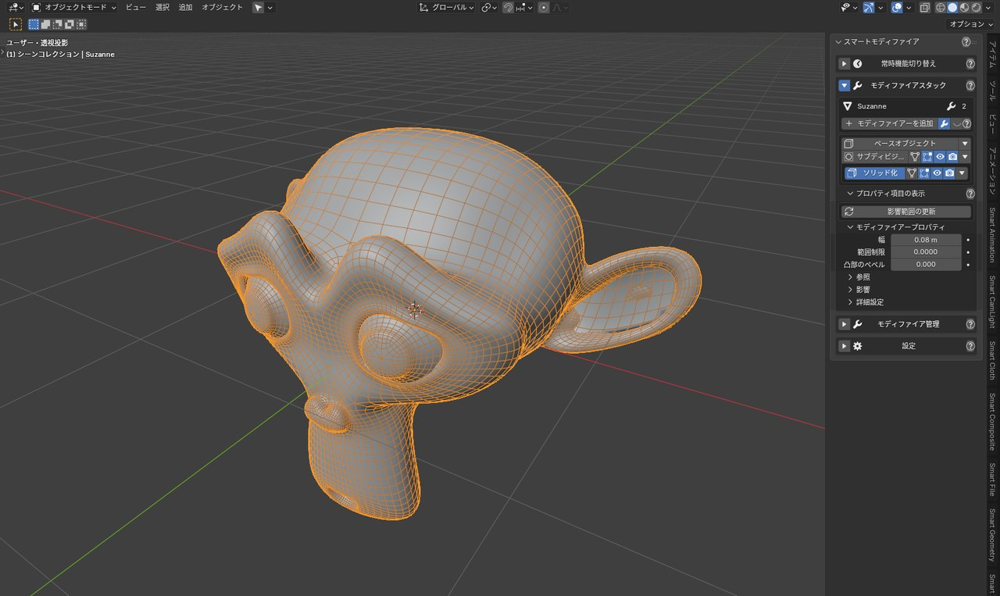
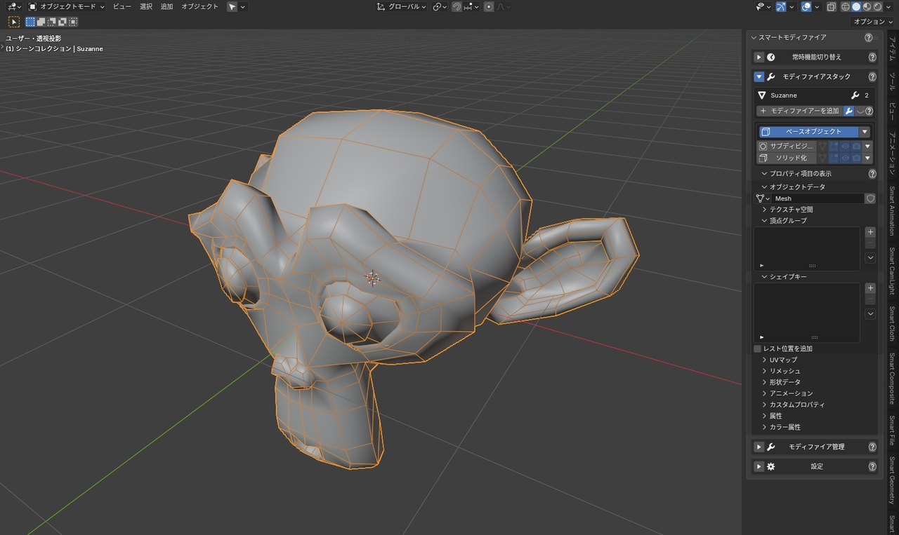
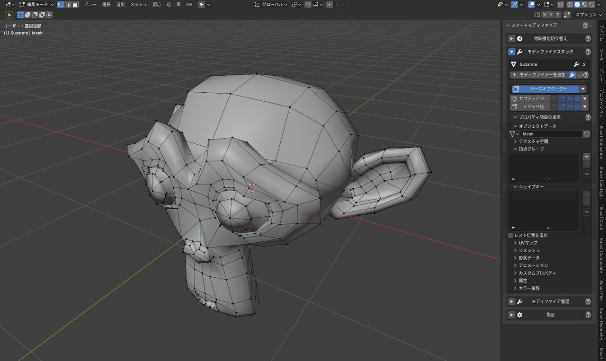
- スザンヌにサブディビジョンサーフェスとソリッド化を足しておきます。
- スタックの「ベースオブジェクト」の行をクリックします（「モディファイア自動無効」はオンのまま）。
- 「ベースオブジェクト」の行をもう一度クリックして、編集モードに入ります。
見どころ：「ベースオブジェクト」を選ぶと、なめらかで厚みのある形から、角ばった元のスザンヌに切り替わります。行の右のアイコンが暗くなり、止まっていることが分かります。編集モードでは、元の粗い網目の点を直接動かせます。
実例スパナのタブで足したモディファイアは、行を切り替えると止まる（立方体で試した様子）
「ベースオブジェクト」を選んだまま、スパナのタブなど Smart Modifier を通さずにモディファイアを足すと、形にはそのままかかり、行のアイコンもオンで出ます。「モディファイア自動無効」で止まるのは、次に行を切り替えた時です。
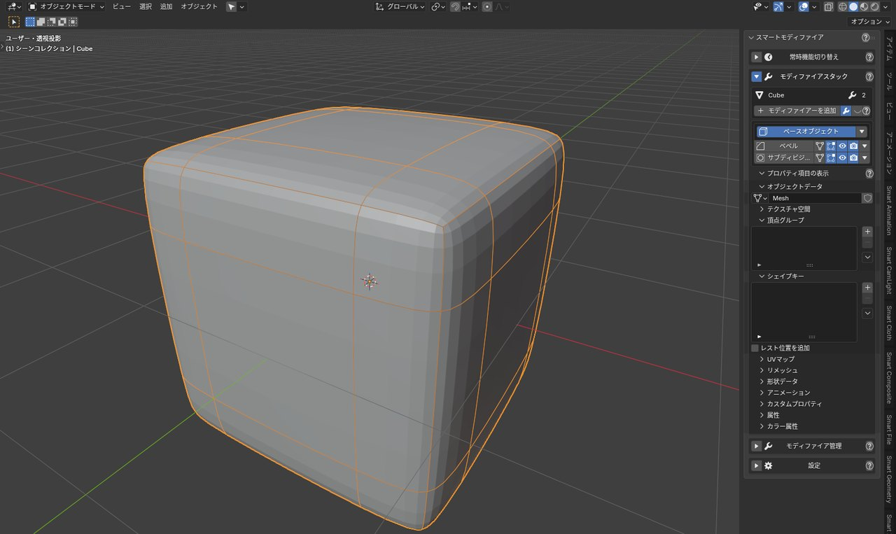
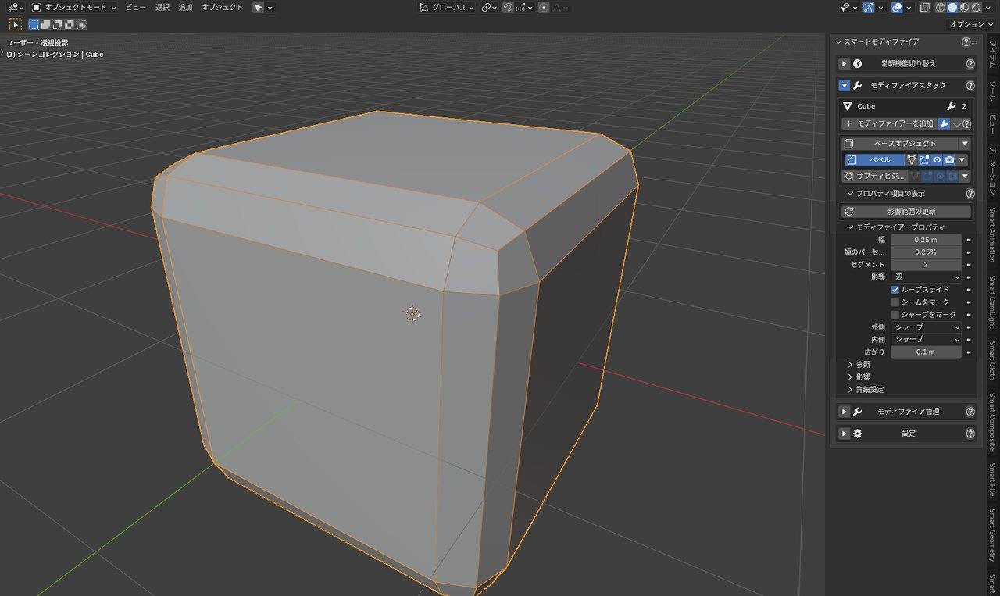
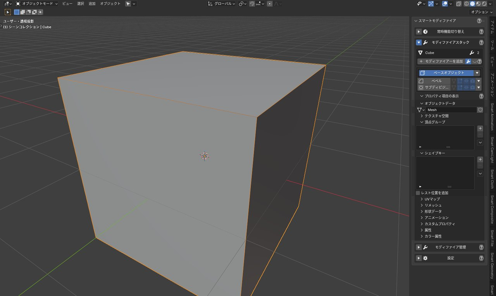
- 立方体を選び、スタックが「ベースオブジェクト」のまま、プロパティエディターのスパナのタブからベベルとサブディビジョンサーフェスを足します。
- スタックの「ベベル」の行をクリックします。
- スタックの「ベースオブジェクト」の行をクリックします。
見どころ：足した直後は丸い形で、行の目のアイコンは開いています。「ベベル」の行を選ぶと後ろのサブディビジョンサーフェスが止まり、「ベースオブジェクト」を選ぶと全部が止まって元の立方体に戻ります。止まった行は全体が薄く出ます。
実例止まっている行の目を押して、動き出した時の状態を決める（立方体で試した様子）
「モディファイア自動無効」で止まっている行は全体が薄く出ます。薄い行のアイコンは、その行が動き出した時の状態を示します。目を押すと、形はまだ変わらず、動き出した時にかかるかどうかだけが切り替わります。スイートが一時的に止めた表示は、オンに戻すと元の状態へ戻ります。標準のスパナのタブで手動で切った表示は、行を切り替えても勝手にオンには戻りません。「選択項目を強制有効」を使う場合は、その設定が適用されます。

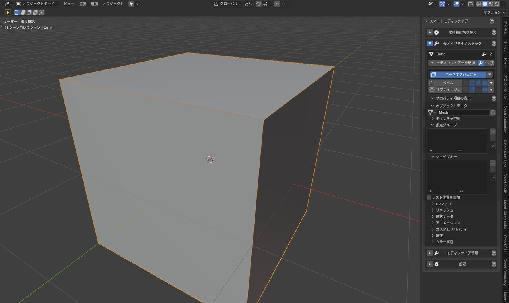
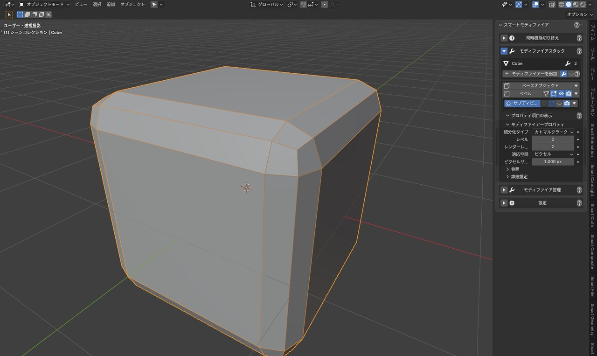
- 立方体にベベルとサブディビジョンサーフェスを足します。
- スタックの「ベースオブジェクト」の行をクリックします。
- 薄い「サブディビジョンサーフェス」の行の目のアイコンを押します。
- スタックの「サブディビジョンサーフェス」の行をクリックします。
見どころ：目を押した時は形が変わりません。行を切り替えて動き出すと、ベベルはかかり、目を閉じたサブディビジョンサーフェスはかかりません。
実例途中までを形に焼き付ける（ここまでを適用）（スザンヌで試した様子）
サブディビジョンサーフェスの行で「ここまでを適用」を選ぶと、そこまでが形に焼き付き、後ろのモディファイアは残ります。
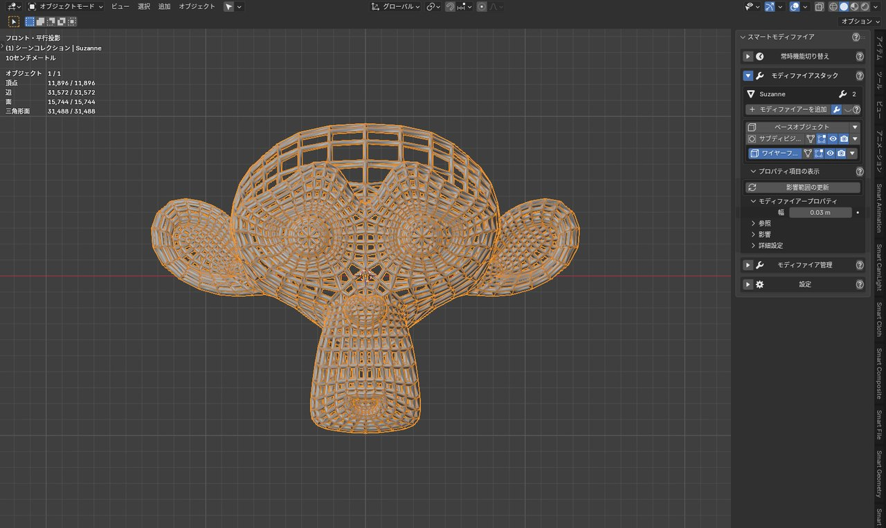
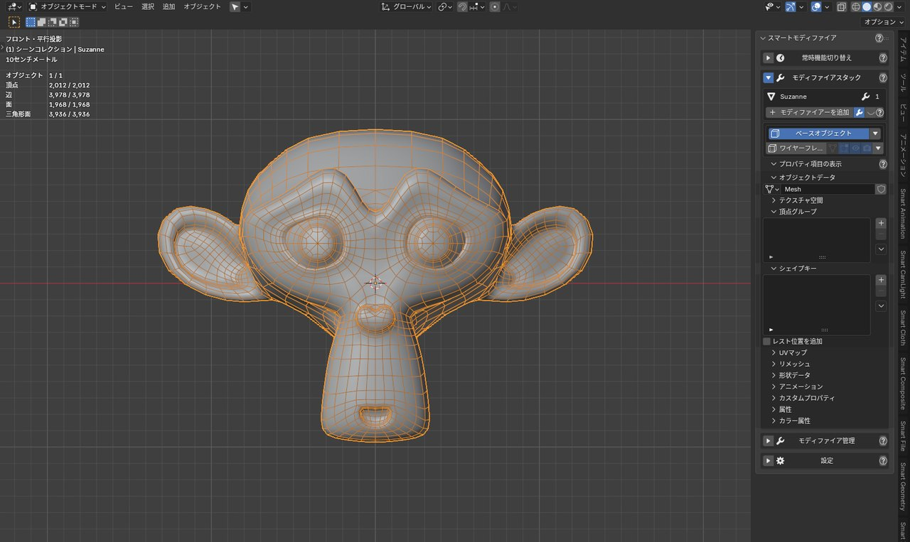
- スザンヌにサブディビジョンサーフェスとワイヤーフレームを足しておきます。
- サブディビジョンサーフェスの行の▼を押し、「ここまでを適用」を選びます。
- 残ったワイヤーフレームの行をクリックします。
見どころ：適用すると、サブディビジョンサーフェスの行がスタックから消え、元の形そのものが細かい網目になります（適用の後は「ベースオブジェクト」が選ばれ、元の形だけが見えます）。残ったワイヤーフレームの行を選ぶと、細かくなった網目に格子がかかり、見た目は適用前と同じになります。モディファイアは 1 つに減っています。
実例3 つのスザンヌに、つながったモディファイアを 1 回で付ける（スザンヌ 3 体で試した様子）
複数を選んで「モディファイアーを追加」すると、つながった（インスタンスの）モディファイアが全部に入ります。
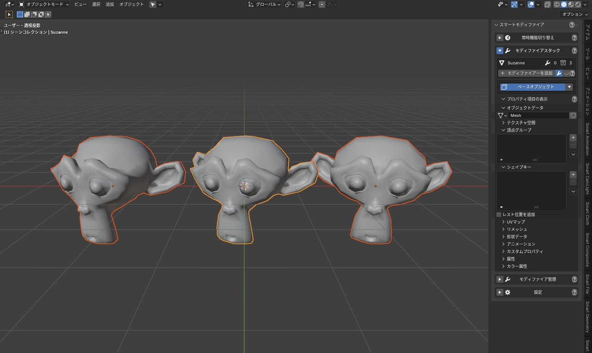
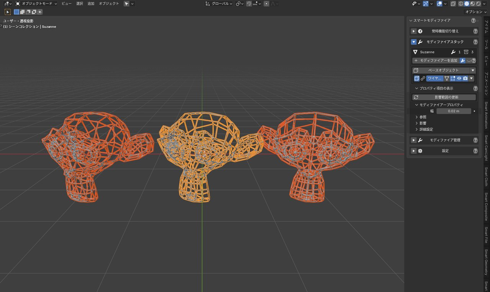
- Shift を押しながら 3 体のスザンヌを選びます。
- 「モディファイアーを追加」から「生成」の「ワイヤーフレーム」を選びます。
見どころ：1 回の追加で 3 体すべてが格子状になります。スタックの行に鎖のアイコンが付き、つながったモディファイアであることが分かります。
実例元の形を直しながら、最後の形も同時に見る（最終結果を表示）（スザンヌで試した様子）
「ベースオブジェクト」の編集モードで目のアイコン（「最終結果を表示」）をオンにすると、元の形を編集しながら、モディファイアを全部かけた最後の形も見えます。元の形の点は最後の形の内側に隠れるので、透過表示にして両方を見ます。
- スザンヌにサブディビジョンサーフェスとディスプレイス（強さ 0.3）を足しておきます。
- スタックの「ベースオブジェクト」の行をクリックし、もう一度クリックして編集モードに入ります。
- 「モディファイアーを追加」の右の目のアイコン（「最終結果を表示」）を押します。
- Alt+Z キーを押して透過表示にします。
- 透けて見える点のうち、頭のてっぺんの点を選び、上へ動かします。
見どころ：目のアイコンを押しても編集モードのままです。透過表示では、元の形の点と、ふくらんだ最後の形が同時に見えます。元の形の点を動かすと、最後の形も一緒に動きます。
実例途中の段階を選んで、後ろのモディファイアを止める（モディファイア自動無効）（スザンヌで試した様子）
途中の行を選ぶと、それより後ろのモディファイアが一時的に止まります。「モディファイア自動無効」をオフにすると、止まっていた物が戻ります。
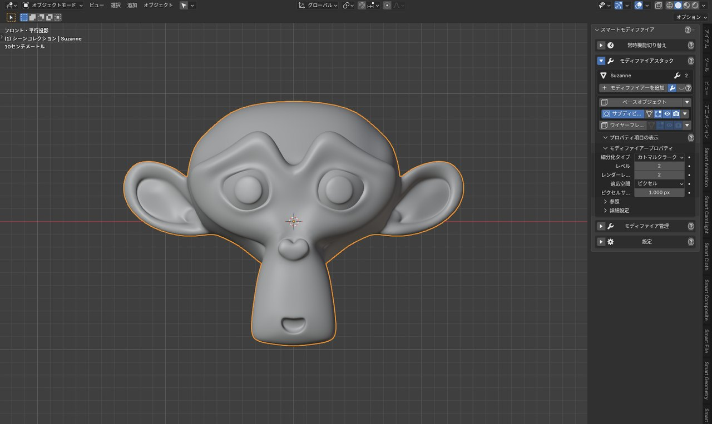
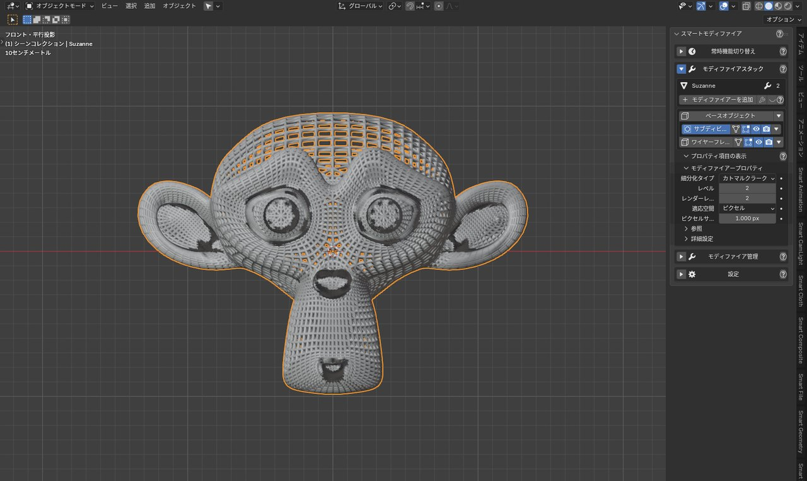
- スザンヌにサブディビジョンサーフェスとワイヤーフレームを足しておきます。
- スタックのサブディビジョンサーフェスの行をクリックします。
- 「モディファイアーを追加」の右のスパナのアイコン（「モディファイア自動無効」）を押してオフにします。
見どころ：行を選ぶと格子が消え、なめらかになった途中の形が見えます。スパナのアイコンをオフにすると、同じ行を選んだまま格子が戻ります。
実例1 体だけつながりを切って、別の設定にする（インスタンス解除）（スザンヌ 2 体で試した様子）
行の▼のメニューの「インスタンス解除」で、その行だけをつながりから切り離します。切り離した後は、値を変えても相手は変わりません。
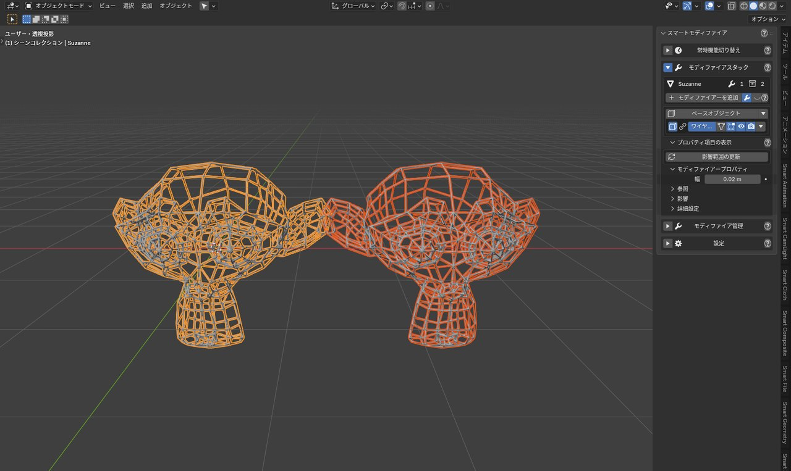
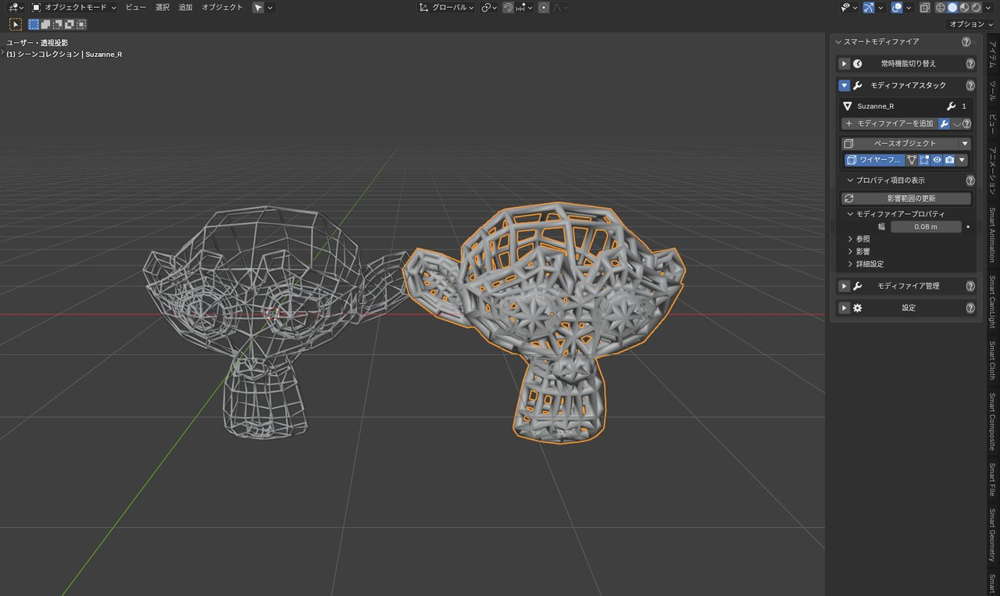
- 2 体につながったワイヤーフレームが入っている状態で、右の 1 体だけをクリックして選びます。
- ワイヤーフレームの行の▼を押し、「インスタンス解除」を選びます。
- 「プロパティ項目の表示」の「幅」を大きくします。
見どころ：右のスザンヌだけ格子が太くなり、左はそのままです。行の鎖のアイコンも消えます。
実例同梱のノイズで表面をでこぼこにする（なめらかなスザンヌで試した様子）
「モディファイアーを追加」の上の方には、同梱のユーザーツールが並びます。ここでは「ノイズ」を足します。
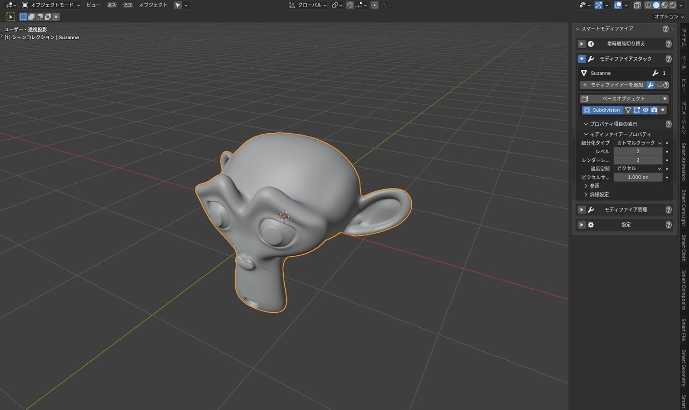
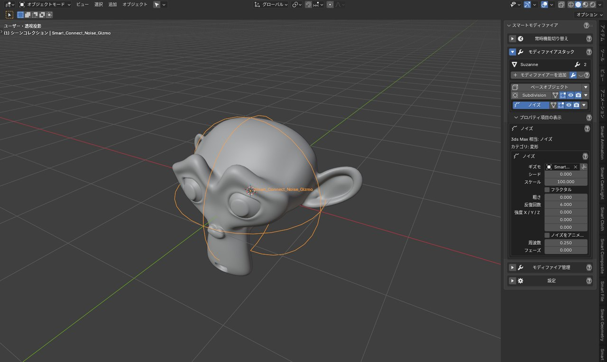
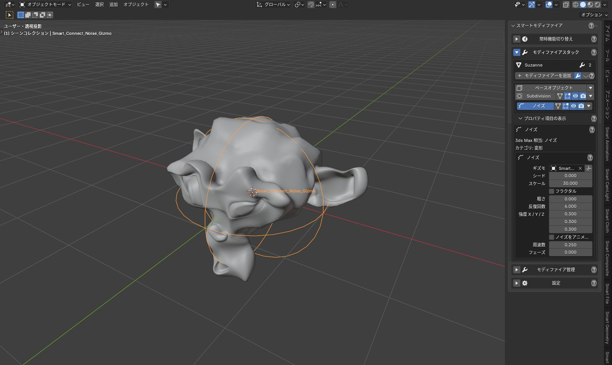
- サブディビジョンサーフェスをかけたスザンヌを選び、スタックのその行（図では名前が「Subdivision」の行）をクリックします。
- 「モディファイアーを追加」を押し、「変形 / FFD / 形状」から「ノイズ」を選びます。
- 「プロパティ項目の表示」の「ノイズ」の欄で、「スケール」を 30 に、「強度 X / Y / Z」をそれぞれ 0.3 にします。
見どころ：足した直後は「強度」が 0 なので形は変わりません。丸い枠（ノイズのギズモ）が出て、選択はこの枠に移りますが、パネルはスザンヌのスタックのまま操作できます。強度を上げると表面がでこぼこになります。スタックの行は、ほかのモディファイアと同じように表示の切り替えや削除ができます。
実例同梱のミラーで、反対側にコピーを作る（原点から横にずらしたスザンヌで試した様子）
「モディファイアーを追加」の同梱のユーザーツールから「ミラー」を足すと、設定欄に「スケール」「コピー」「中心」が出ます。「スケール」で −1 にした軸の向きへ反転します。
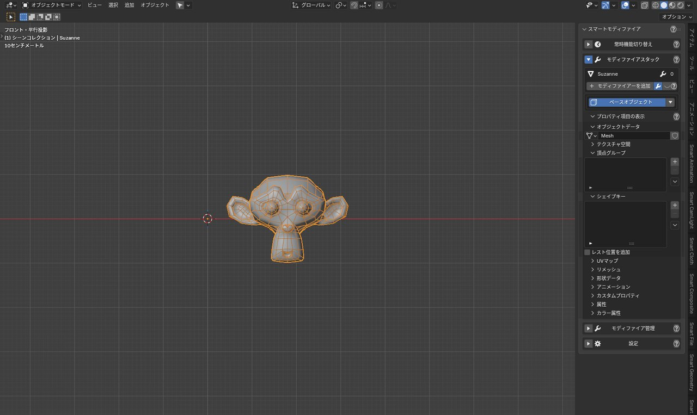
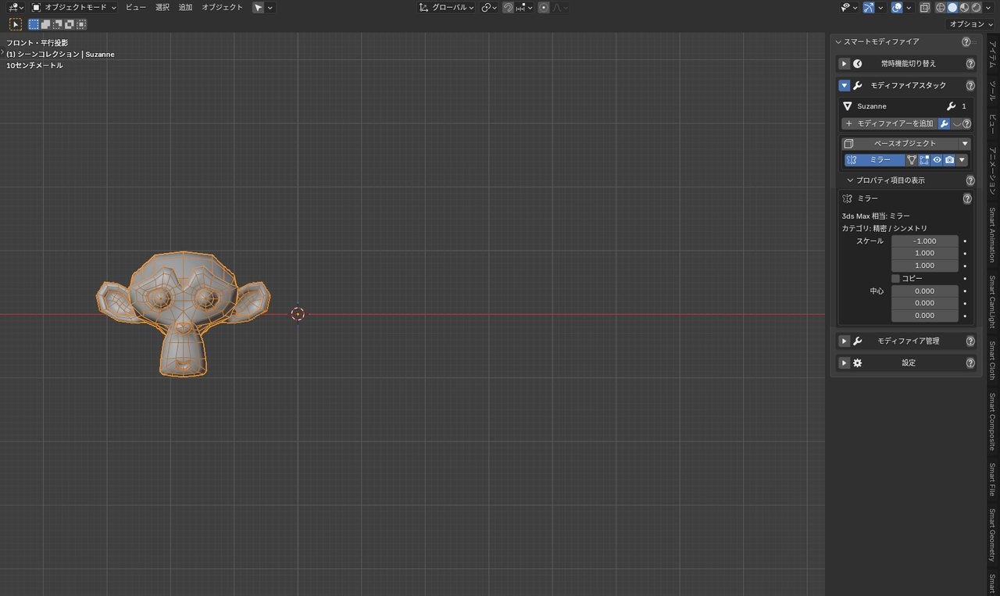
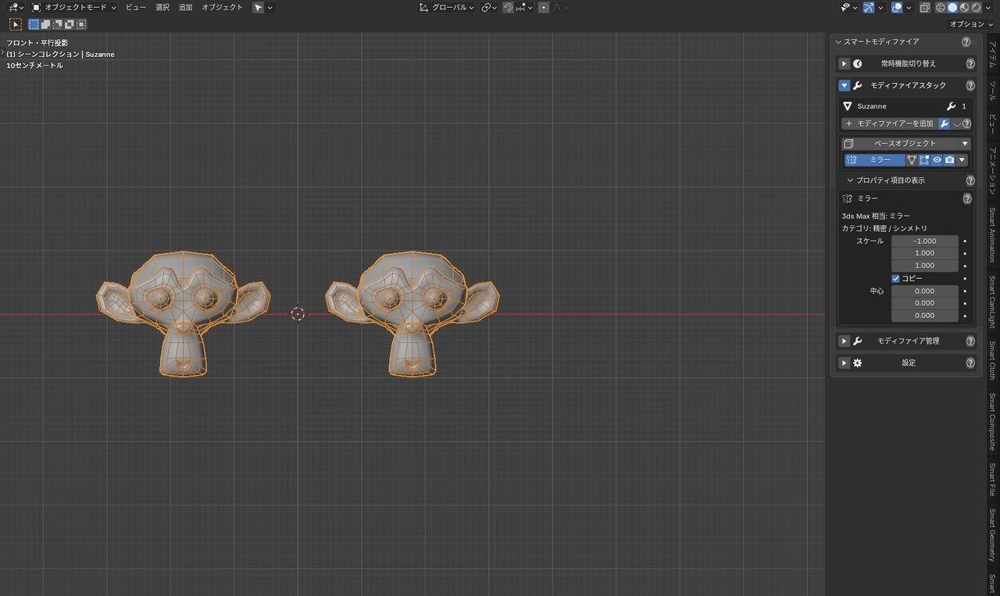
- 原点から横にずらしたスザンヌを選びます。
- 「モディファイアーを追加」を押し、「精密 / シンメトリ」から「ミラー」を選びます。
- 「プロパティ項目の表示」の「ミラー」の欄で、「コピー」をオンにします。
見どころ：足した直後は、スザンヌが原点の反対側へ反転して移ります。「コピー」をオンにすると元の形も残り、左右に 2 体並びます。「中心」を動かすと、反転の基準の位置が変わります。
4-3. プロパティ項目の表示
スタックで選んでいる段階の設定欄（数値やスライダー）を、サイドバーの中に出す折りたたみです。閉じても値は変わらず、パネルを短くできます。
場所「モディファイアスタック」の一覧のすぐ下にあります。最初は開いています。
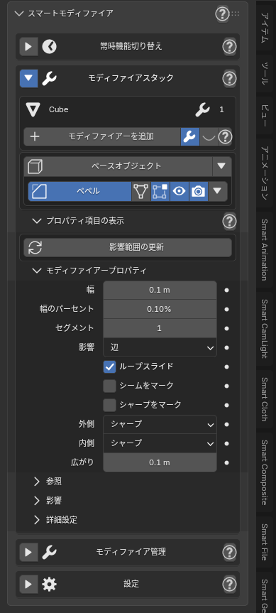
| 表示 | 働き |
|---|---|
| プロパティ項目の表示（見出し） | クリックで開閉します。開くと、選んでいるモディファイアの設定欄が出ます。「ベースオブジェクト」を選んでいる時は、プロパティエディターの「データ」タブと同じ内容（元のオブジェクトのデータの設定）が出ます。 |
| 影響範囲の更新 | 頂点グループで効く範囲を絞れるモディファイアの行で出ます。「ベースオブジェクト」や編集ポリゴンの段階で選んだ点・辺・面を、効く範囲として書き込みます。何も選んでいなければメッシュ全体が範囲になります。 |
| 設定欄 | ここで変えた値は、すぐに画面の形へ反映されます。インスタンスでつながっている時は、1 体だけを選んで変えても、つながった相手に同じ変更が入ります。 |
実例1 体の値を変えると、つながった相手も変わる（スザンヌ 2 体で試した様子）
つながった（インスタンスの）モディファイアは、1 体だけを選んで値を変えても、相手に同じ変更が入ります。

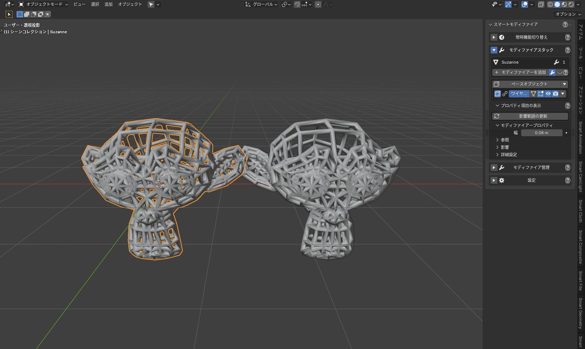
- Shift を押しながら 2 体のスザンヌを選び、「モディファイアーを追加」から「生成」の「ワイヤーフレーム」を選びます。
- 1 体だけをクリックして選びます。
- 「プロパティ項目の表示」の「幅」を大きくします。
見どころ：選んでいるのは左の 1 体だけですが、右のスザンヌの格子も同じ太さになります。
4-4. 編集ポリゴンメンテナンス
同梱の編集ポリゴン（上のモディファイアの結果の上に、点の移動を重ねて編集する層）をスタックに入れている時だけ出る、手入れ用の折りたたみです。
場所「モディファイアスタック」の中、「プロパティ項目の表示」の下にあります。スタックに編集ポリゴンの層がある時だけ出ます。最初は閉じています。
| 表示 | 働き |
|---|---|
| 全レイヤー再計算 | すべての編集ポリゴンの層を計算し直します。スタックの並びを変えた後などに、元の形と編集した形のずれを直します。 |
| レベル切替同期 | 編集ポリゴンの行を選んでいる時だけ出ます。段階を切り替えた時の、編集ポリゴンの編集状態を安全に合わせ直します。 |
4-5. モディファイア管理
モディファイアと、それを持つオブジェクトを一覧にして、表示の切り替えや削除をまとめて行う場所です。
場所「スマートモディファイア」パネルの 3 番目の見出しです。最初は閉じています。
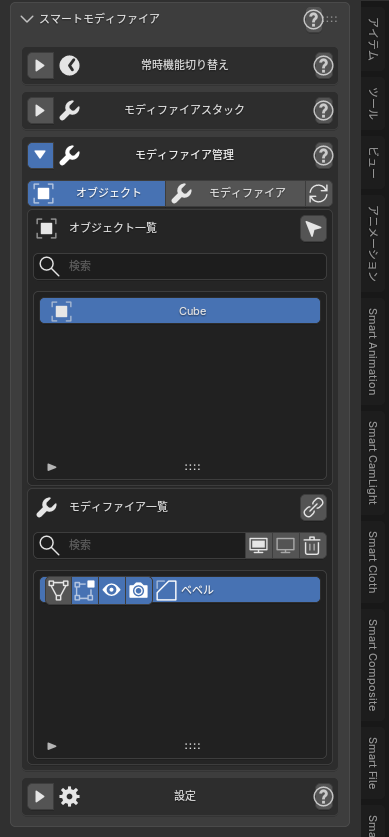
| 表示 | 働き |
|---|---|
| オブジェクト / モディファイア | 管理の基準を切り替えます。「オブジェクト」は、今選んでいるオブジェクトのモディファイアを扱い、「オブジェクト一覧」が上に並びます。「モディファイア」は、シーン内の全部のモディファイアを名前と種類ごとに扱い、「モディファイア一覧」が上に並びます。切り替えると一覧は作り直されます。 |
| リスト更新（更新のアイコン） | シーンを調べ直して、2 つの一覧を作り直します。モディファイアを足した・消した・名前を変えた後や、表示が古い時に押します。 |
| オブジェクト一覧 | オブジェクトが並びます。名前をクリックすると、そのオブジェクトだけを選びます。Shift か Ctrl を押しながらクリックすると、今の選択に足します。上の欄に名前の一部を入れておくと、次に一覧を作り直した時（更新のアイコンを押した時など）から、その名前を含むオブジェクトだけが並びます。 |
| リスト内を全選択 | 「オブジェクト一覧」の見出しの右のボタンです。今の選択を外して、一覧に出ているオブジェクトを全部選びます。 |
| モディファイア一覧 | モディファイアが並びます。各行の左の 4 つのアイコン（ケージ・編集モード・ビューポート・レンダー）を押すと、その行のモディファイアを持つ全部のオブジェクトで切り替わります。インスタンスの時は、つながった全部が一緒に変わります。状態がまちまちの時は「？」のアイコンが出ます。上の欄に文字を入れると絞り込めます。 |
| ビューポート ON / ビューポート OFF / 削除（絞り込み欄の右の 3 つのボタン） | 「モディファイア一覧」で選んだモディファイアを、持っている全部のオブジェクトで、表示オン・表示オフ・削除します。左から、画面のアイコン（「ビューポート ON」）、暗い画面のアイコン（「ビューポート OFF」）、ごみ箱のアイコン（削除）です。削除の時は確認が出ます。 |
| インスタンスモディファイアを全選択（鎖のアイコン） | 「オブジェクト」の基準の時だけ、「モディファイア一覧」の見出しの右に出ます。選んだ行と同じインスタンスのモディファイアを使っているオブジェクトを、全部選びます。 |
実例シーン中の同じモディファイアを一度に隠す（スザンヌ 3 体で試した様子）
「モディファイア管理」の「モディファイア一覧」で行を選び、「ビューポート OFF」を押すと、そのモディファイアを持つ全部のオブジェクトで表示が消えます。
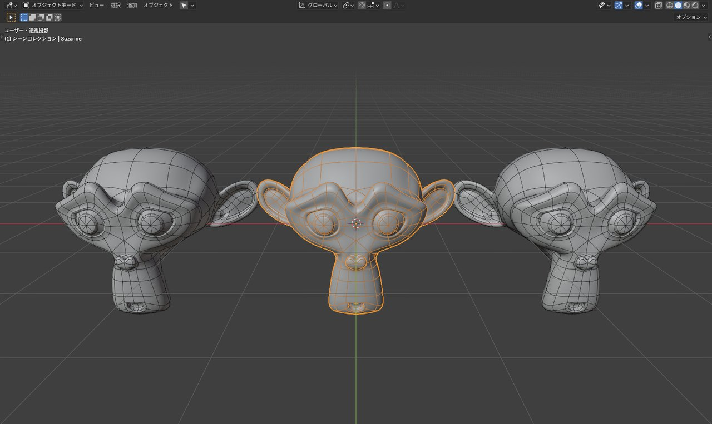
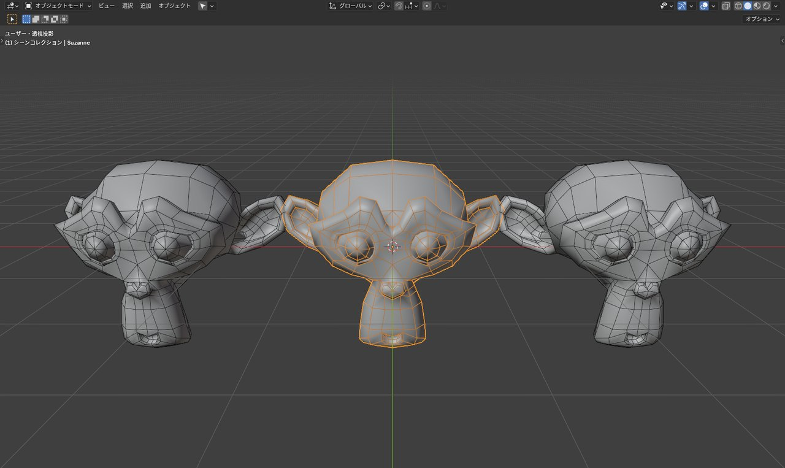
- 「モディファイア管理」の見出しを開き、「モディファイア」を押します。
- 「モディファイア一覧」で、隠したいモディファイア（ここではサブディビジョンサーフェス）の行を選びます。
- 絞り込み欄の右に並ぶ 3 つのアイコンのうち、まん中の暗い画面のアイコン（「ビューポート OFF」）を押します。
見どころ：3 体とも、なめらかな形から角ばった元の形に一度に戻ります。1 体ずつ表示を切り替える必要がありません。
4-6. 設定
Smart Modifier の動き方と、ショートカット登録用の情報をまとめた場所です。
場所「スマートモディファイア」パネルのいちばん下の見出しです。最初は閉じています。
| 表示 | 働き |
|---|---|
| 最終結果を表示ショートカット | 「最終結果を表示」をキーで切り替えたい時に使います。「IDをコピー」を押すと、登録に使う ID がコピーされます。おすすめの登録場所は「プリファレンス > キーマップ > 3Dビュー > 3Dビュー（グローバル）」です。 |
| アクティブ階層ショートカット | 編集する段階を 1 つ上・1 つ下へ動かすキーを作る時に使います。「アクティブ階層を上へID」「アクティブ階層を下へID」の「IDをコピー」で ID をコピーします。おすすめの登録場所は 2 か所で、オブジェクトモード用は「プリファレンス > キーマップ > 3Dビュー > オブジェクトモード」、編集モード用は「プリファレンス > キーマップ > Mesh > 編集モード」です。動かすのは編集する段階だけで、モディファイアの並び順は変わりません。「モディファイア自動無効」や「最終結果を表示」がオンの時も、スタックの行をクリックした時と同じように切り替わります。 |
| インスタンスコピー（ボタン） | 選んだオブジェクトを複製します。出る画面で、独立した複製（通常）か、つながった複製（インスタンス）かと、数を選びます。インスタンスでは、元と複製の Smart Modifier のスタックがつながります。 |
| インスタンス解除（ボタン） | 選んだオブジェクトのつながりを切り、独立したオブジェクトにします。 |
| ドラッグクローン | ドラッグで複製する操作の既定値です。「クローン既定値」の中の「既定のクローン方式」で「コピー」か「インスタンス」を、「既定のコピー数」で数を決めます（最初は「コピー」と 1 です）。複製の確認の画面に、最初にこの値が出ます。操作そのものは、下の「ドラッグクローンID」の「IDをコピー」で ID をコピーし、キーを登録してから使います。 |
| インスタンスコピーのショートカットID | 「インスタンスコピーID」「インスタンス解除ID」「ドラッグクローンID」の行があり、それぞれの「IDをコピー」で ID をコピーします。おすすめの登録場所は、インスタンスコピーと解除が「プリファレンス > キーマップ > 3Dビュー > オブジェクトモード」、ドラッグクローンが「プリファレンス > キーマップ > 3Dビュー > 3Dビュー（グローバル）」です。 |
| Smart Modifier を使用（「モディファイアスタック」の枠） | 「モディファイアスタック」の作業場所を出すかどうかです。切っても、オブジェクトのモディファイアは変わりません。 |
| ベースオブジェクトを上 / ベースオブジェクトを下（「モディファイアスタック表示」） | スタックの並びの向きです。「上」は Blender と同じく上から読む並び、「下」は最後のモディファイアを上に見たい時に使います。表示の順だけが変わり、実際の順番は変わりません。 |
| 復元動作（「自動無効からの復元」） | 「モディファイア自動無効」で止めたモディファイアを戻す時の動きです。「現在の有効・無効状態を維持」は、止める前の状態にそのまま戻します。「選択項目を強制有効」は、止める前の状態に戻したうえで、選んだ項目だけをオンにします。この方式を選ぶと、すぐ下に「強制有効」の行が出て、4 つのアイコン（ケージ・編集モード・ビューポート・レンダー）でオンにする項目を選べます。 |
| モディファイア管理を使用（「同梱サブツール」の枠） | 「モディファイア管理」の見出しを出すかどうかです。 |
| Edit Polygon Modifier（同梱サブツール） / Smart Lattice Modifier（同梱サブツール） | 同梱の編集ポリゴンと Smart Lattice を使うかどうかです。オンの時、「モディファイアーを追加」のユーザーツールに「編集ポリゴン」「スマートラティス」が出ます。使わない時はオフにすると、待機中が軽くなります。最初はどちらもオンです。裏の同期は「常時機能切り替え」で別に入れます。 |
実例つながった複製を並べて作る（インスタンスコピー）（スザンヌで試した様子）
「インスタンスコピー」で、元とつながった複製を、ずらしながらまとめて作ります。後から元にモディファイアを足すと、複製にも同じ物が入ります。
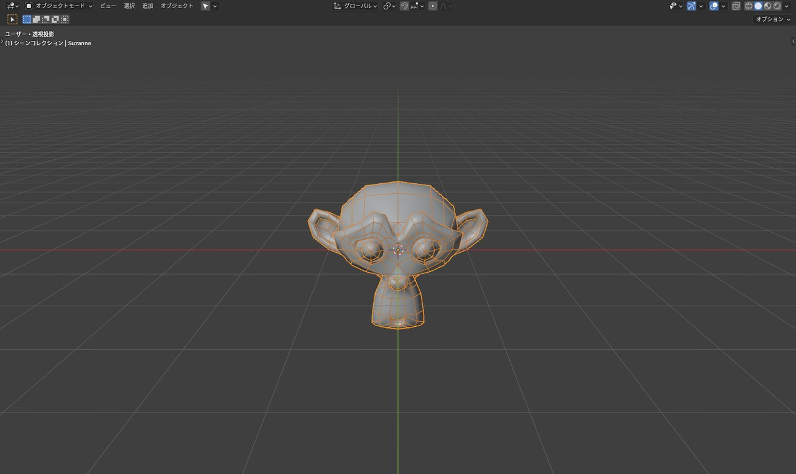
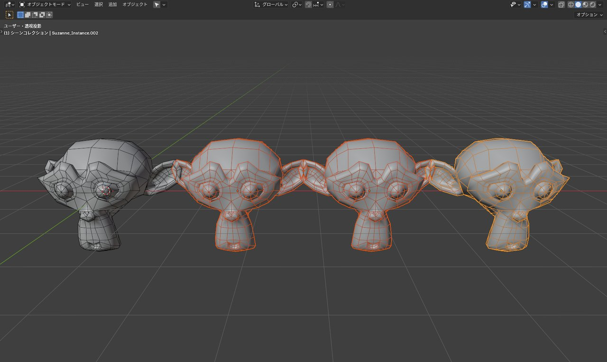
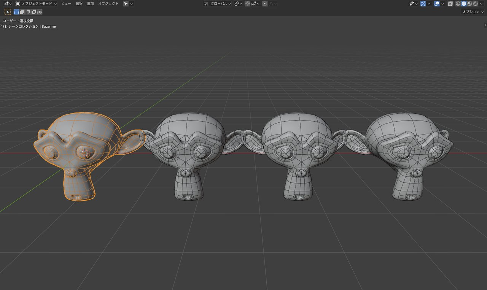
- スザンヌを選びます。
- 「設定」の「インスタンスコピー」を押します。
- 出た画面で「インスタンス」を選び、「コピー数」を 3、「オフセット」の X を 2.5 にして OK を押します。
- 元のスザンヌに「モディファイアーを追加」から「生成」の「サブディビジョンサーフェス」を足します。
見どころ：1 体だったスザンヌが横に 4 体並びます。元に足したサブディビジョンサーフェスが、つながった複製にもそのまま入り、全部がなめらかになります。
そのほかの画面
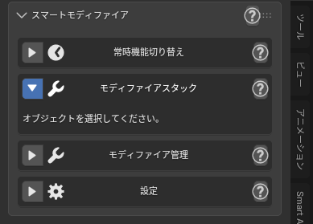
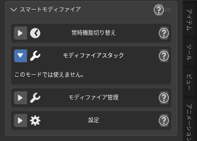
5. よく使う手順
モディファイアを足して、元の形を編集し直す
角を丸めたりなめらかにしたりしたあとで、元の形に戻って直す。
- 立方体などのオブジェクトをクリックして選びます。
- 「モディファイアスタック」の「モディファイアーを追加」を押し、「生成」から使いたいモディファイアを選びます。
- スタックに行が増えます。行の右の 4 つのアイコンで、表示のオン・オフを変えられます。
- 「ベースオブジェクト」の行をクリックします。元の形を編集する段階に切り替わります。
- 「ベースオブジェクト」の行をもう一度クリックすると、編集モードに入ります。形を直します。
- 同じ行をもう一度クリックすると、オブジェクトモードに戻ります。
結果：モディファイアを残したまま、元の形を直せます。
途中の段階だけを見ながら編集する
後ろのモディファイアに邪魔されずに、途中の形を確かめる。
- モディファイアが 2 つ以上ある状態で、確かめたい行をクリックして選びます。
- 「モディファイアーを追加」の右の「モディファイア自動無効」のアイコンがオンか確かめます（最初はオンです）。後ろの行の表示が一時的にオフになります。
- 最後の形も同時に見たい時は、目のアイコン（「最終結果を表示」）もオンにします。
- 止めずに全部を見たい時は、「モディファイア自動無効」をオフにします。止めていた行が戻ります。
結果：選んだ段階までの形を見ながら編集できます。
複数のオブジェクトに同じモディファイアをまとめて付ける
何個かのオブジェクトを、同じ設定で一度に調整できるようにする。
- Shift を押しながら、オブジェクトを複数クリックして選びます。
- 「モディファイアーを追加」から、使いたいモディファイアを選びます。つながった（インスタンスの）モディファイアとして全部に入ります。
- その行を選び、「プロパティ項目の表示」を開いて値を変えると、つながった全部のオブジェクトに同じ変更が入ります。
- 1 つだけ別の設定にしたい時は、そのオブジェクトだけを選び、行の▼のメニューから「インスタンス解除」を選びます。
結果：同じ設定のモディファイアを、まとめて調整できます。
シーン中の同じモディファイアを一度に隠す
重いモディファイアを、全部のオブジェクトで一度に表示オフにする。
- 「モディファイア管理」の見出しを開きます。
- 「モディファイア」を押して、モディファイアの基準にします。一覧が作り直されます。
- 一覧が古い時は、更新のアイコン（「リスト更新」）を押します。
- 「モディファイア一覧」で、隠したいモディファイアの行をクリックして選びます。
- 絞り込み欄の右に並ぶ 3 つのボタンのうち、まん中の暗い画面のアイコン（「ビューポート OFF」）を押します。
結果：そのモディファイアを持つ全部のオブジェクトで、ビューポートの表示がオフになります。
6. 困った時
- サイドバーに「オブジェクトを選択してください。」と出て、何も出ません。
- オブジェクトを選んでいない時の表示です。3D ビューでオブジェクトをクリックして選んでください。スカルプトやポーズなどのモードでは「このモードでは使えません。」と出ます。オブジェクトモードか編集モードに切り替えてください。
- Blender 標準のスパナのタブで付けたモディファイアも出ますか。
- はい。スタックには、選んだオブジェクトのモディファイアがそのまま並びます。
- 行をクリックしても編集モードに入りません。
- 別の行をクリックした時は、今のモードのまま段階だけが切り替わります。選んでいる行をもう一度クリックすると、編集モードとオブジェクトモードが切り替わります。
- 「モディファイア管理」の一覧が空、または古いままです。
- 一覧は最初は自動では作り直されません。更新のアイコン（「リスト更新」）を押してください。いつも自動にしたい時は、「常時機能切り替え」の「モディファイア管理リスト更新」を有効にします。
- 「適用」を間違えて押しました。
- Undo（Ctrl+Z）で戻せます。
- ショートカットキーが何も効きません。
- Smart Modifier はキーを自動では登録しません。「設定」の「IDをコピー」で ID をコピーし、プリファレンスのキーマップで必要な物だけ登録してください。
- 複数のオブジェクトを選ぶと、スタックの行が減りました。
- 複数選んでいる時は、全部に共通する、つながった（インスタンスの）モディファイアだけが出ます。1 つだけ選ぶと全部の行が出ます。
アドオンが出ない・日本語にならない、など全部のアドオンに共通のことは、全体仕様書の「困った時」を見てください。
7. 用語集
- モディファイア
- 元の形を壊さずに、あとから形を変える仕組みです。
- スタック
- オブジェクトに重ねたモディファイアの一覧です。上から順に効きます。
- ベースオブジェクト
- モディファイアをかける前の、元の形の段階です。
- インスタンス
- 複数のオブジェクトで、同じ設定をつないで共有している状態です。片方を変えると、もう片方も変わります。
- 適用
- モディファイアの結果を形に焼き付けて、モディファイアを消すことです。
- ケージ
- 編集モードで、編集する点を、変形した後の形の上に出す表示です。
- 登録ID
- ショートカットに登録する時に入れる、操作の名前です。「設定」の「IDをコピー」でコピーできます。
- 編集ポリゴン
- 同梱のツールです。上のモディファイアの結果の上に、点の移動を重ねて編集する層を作ります。
8. 付録：版と確認値・できないこと
| アドオン | Smart Modifier（smart_modifier_suite） |
|---|---|
| 版 | 1.0.0 |
| ZIP | SmartModifier_1.0.0_2DBF95E1FD83_INSTALLABLE.zip |
| 大きさ | 1,617,989 バイト |
| SHA256 | 7c071dd90cf35e58f47e3cb8ece94283e07a667d2b67c0f7029d332fe486c80f |
できないこと・注意
- ショートカットキーは自動では登録されません。必要な物は自分でキーマップに登録します。
- 「モディファイア管理」の一覧は、「リスト更新」を押すか、基準を切り替えるか、自動更新を有効にした時だけ新しくなります。
- 複数のオブジェクトを選んでいる時、スタックには共通するインスタンスのモディファイアだけが出ます。
- スパナのタブなど Smart Modifier を通さずに足したモディファイアは、「モディファイア自動無効」がオンでも、次にスタックの行を切り替えるまで止まりません（行のアイコンはオンのまま出ます）。
- スパナのタブで手動でオフにしたモディファイアのビューポート表示は、スタックの行を切り替えてもオフのままです。スイートが一時的にオフにした表示は、スイート側でオンに戻すと元の状態へ戻ります。「モディファイア自動無効」の「選択項目を強制有効」は、その設定に従ってオンにします。
- 「モディファイアスタック」は、オブジェクトモードと編集モードで使えます。スカルプトやポーズなどのモードでは使えません。
- パネルは 3D ビューのサイドバーに出ます。
Smart Modifier 解説書 v1.0.0 ／ 2026-11-17 作成